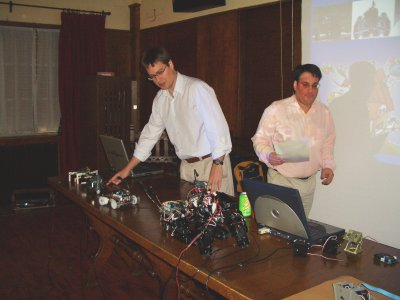
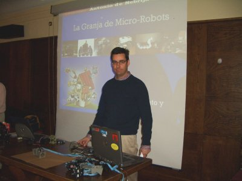
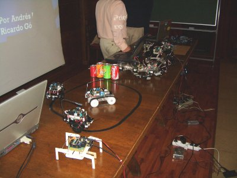
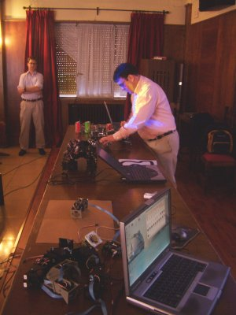
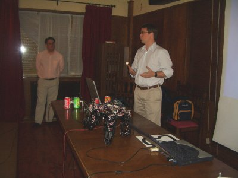
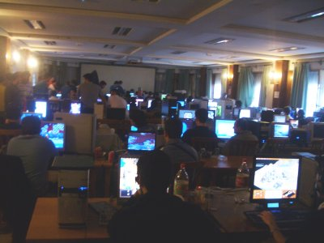
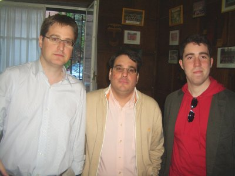
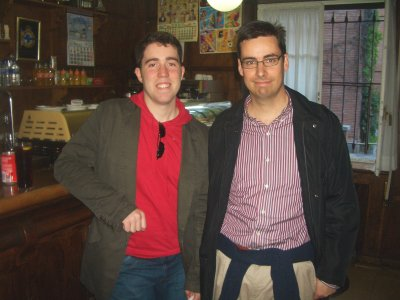

|
|
|
"Granja de Micro-Robots”. Nebrija Lan Party. Madrid. Mayo 2007 |
|
|
Título: “Granja de Micro-Robots”
Duración: 50 minutos de conferencia-show
Evento: Nebrija Lan Party.
Organización de la party: Colegio Mayor Universitario Antonio de Nebrija y Universidad Complutense de Madrid
Organización de la conferencia-show: Esta charla es parte de las actividades organizadas por Quark Robotics
Lugar: Colegio Mayor Universitario Antonio de Nebrija (Macrid).
Fecha: 28 de Abril de 2007
Persona de contacto: Leandro Blanco
Ponentes:
Robots enseñados: Skybot, Clónico, Sheila, Puchobot, Configuraciones mínimas, Hypercube, “Varita mágica” y “minority report”.
El objetivo de esta charla-show es despertar el interés por la robótica entre los asistentes y hacerles ver que es un mundo divertido, apasionante y sencillo. Cualquiera puede construir su primer robot. Sólo se necesitan ganas. Para ello se comienza mostrando el robot más sencillo, el “hola mundo” de la robótica. Se llama Skybot y es el que utilizamos en nuestros talleres de iniciación. Es un robot abierto. Toda la información está disponible bajo una licencia libre: planos, electrónica y software. Se continúa con el Clonico, una versión del Skybot con una estructura mecánica mejorada y propulsión por orugas en vez de ruedas.
A continuación nos centramos en los robots articulados, que tienen una mecánica un poco más compleja y en los que aparece el problema de la coordinación. ¿Cómo coordinar las diferentes articulaciones para conseguir que el robot se mueva?. Como ejemplo se muestra a Sheila, un robot hexápodo constituido por tres servos. Permite iniciarse de manera fácil en el control de robots articulados. El siguiente en complejidad es PuchoBot, un robot cuadrúpedo que tiene 12 servos (3 por pata) y está controlado con una red de microcontroladores. La generación de las secuencia se realiza desde un PC y se transmite al robot.
En la siguiente parte se habla sobre una nueva tendencia surgida en 1994: La robótica modular. Son robots construidos por la unión de módulos. Se muestran los módulos Y1 y cómo con ellos se han realizado diferentes robots modulares de tipo “gusano”. El primero es el gusano “hola mundo”, el más sencillo que se puede construir, constituido sólo por la unión de dos módulos, y que sólo se puede desplazar hacia adelante y hacia atrás. Añadiendo un módulo más, pero que rote paralelamente al suelo, se logra tener un gusano capaz de moverse en dos dimensiones. El último gusano presentado es Hypercube, formado por 8 módulos, 4 rotan horizontalmente y 4 verticalmente. Se mueve como una serpiente.
Retornando a los robots con ruedas, se muestra a Joshua, un robot de exploración que tiene una cámara incorporada y con dos grados de libertad lo que permite examinar el entorno. Es un robot telecontrolado desde el PC. La sensación que se tiene al “conducirlo” es como si se estuviese jugando al Doom pero en la realidad ;-)
Por último se hacen algunas friki-demos, como son el control de un servo y de un skybot utilizando el mando de la wii.
|
|
|
Transparencias de la presentación |
|
Presentación en PDF |
|
|
Presentación para OpenOffice 2.0 |
Robot “hola mundo” Skybot
Robot Hexápodo Sheila
Robot cuadrúpedo Puchobot
Información sobre los módulos Y1
Robot ápodo Cube Revolutions
Control de servos con el mando de la wii: La varita mágica.
Control de un skybot con el mando de la wii: “minority report”
La charla fue el sábado 5 de mayo por la tarde, a las 18h, en el salón de actos del Colegio Mayor Universitario Antonio de Nebrija. Inicialmente yo no iba a estar en la charla. La iban a dar Andrés y Ricardo. Yo tendría que haber ido con Alejandro ese mismo sábado a dar una en Jaén, pero a última hora se aplazó la party hasta Junio. Como me apetecía conocer sitios nuevos me fui con Ricardo y Andrés.
En la foto de la izquierda están Andrés y Ricardo haciendo el despliegue de robots: Skybot, clónico, Puchobot, Sheila y Joshua. En la derecha yo estoy haciendo lo propio con los módulos Y1, las configuraciones mínimas e Hypercube.
|
 |
 |
En esta charla el despligue fue bastante grande. Llevamos tres portátiles y 10 robots ;-) En la izquierda se pueden ver dos Skybot, el clónico y Sheila en primer plano y al fondo Benita y Puchobot. En la derecha está hypercube, las dos configuraciones mínimas (PP y PYP) y varios módulos Y1.
Las charla la comenzó Ricardo, explicando los robots Skybot, clónico y Sheila (foto de la derecha).
|
 |
 |
A continuación Andrés explicó a Puchobot (foto de la izquierda). Luego yo conté los robots modulares y Andrés continuó con Joshua, una de las demostraciones más divertidas. Por último hicimos una demostración de movimiento de un servo con el mando de la wii, y mostramos cómo mover un skybot también con el wiimote. Esta aplicación era la primera vez que la mostramos. Luego dejamos que los asistentes pudiesen jugar con el skybot y el wiimote.
En la foto de la derecha se puede ver el ambiente que había en la party. Era una party pequeñita, pero con un ambiente muy friki ;-)
|
 |
 |
Al final de la charla vino Rafael Treviño y nos fuimos a tomar algo al bar del Colegio, mientras hablábamos sobre python ;-) En la Izquierda están Andrés, Ricardo y Rafa y en la derecha estamos Rafa y yo. Salieron unas ideas muy interesantes. Y al día Siguiente Rafa ya tenía implementadas algunas de ellas. ¡Rafa eres un crack! ;-)
|
 |
 |